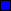

그러나 꿀벌을 지키는것은, 곧 우리 인간을 지키는것과 같습니다.
이런방식으로 인간이 먹는 전체 식량 생산의 약 33%가 꿀벌의 수분 활동에 의존하고있습니다. 심지어 아몬드나 양파, 아보카도는 꿀벌 의존도가 90%~100%에 해당하기때문에 꿀벌이 멸종한다면 이들 역시 회생이 불가능할정도의 큰 타격을 받게됩니다. 실제로 알베르트 아인슈타인(1879~1955)은 꿀벌이 멸종되면 인간도 4년내에 멸종될것이라고 말한적이 있을정도로 꿀벌의 존재는 우리 인간에게도 매우 중요하다는것을 알수있습니다.
그러나 이런 꿀벌의 개체수는 현재 많이 감소하고있는 추세입니다. 특히 2022년에는 전국에서 약 70억 마리의 벌들이 단체로 실종되는 현상이 발생되기도했습니다. 어째서 이런일이 일어나게 된걸까요?
온도
 꿀벌 개체수
꿀벌 개체수-
2012
-
2013
-
2014
-
2015
-
2016
-
2017
-
2018
-
2019
이로인해 2010년대에 들어 꿀벌의 개체수는 과거에 비해 약 40%가량이 줄어들었으며, 이는 더이상 우리가 보고만있을 문제가 아니라는것을 보여줍니다.